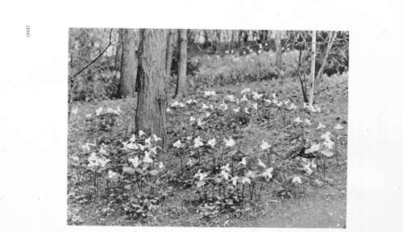

Chapter XIII. On The Mistakes Of Citizens In Country Life
Description
This section is from the book "Landscape Gardening", by Andrew Jackson Downing. Also available from Amazon: Landscape Gardening.
Chapter XIII. On The Mistakes Of Citizens In Country Life
NO one loves the country more sincerely or welcomes new devotees to the worship of its pure altars more warmly than ourselves. To those who bring here hearts capable of understanding the lessons of truth and beauty which the Good Creator has written so legibly on all his works; to those in whose nature is implanted a sentiment that interprets the tender and the loving, as well as the grand and sublime lessons of the universe, what a life full of joy, and beauty, and inspiration, is that of the country; to such:
-"The deep recess of dusky groves,
Or forest where the deer securely roves,
The fall of waters and the song of birds,
And hills that echo to the distant herds,
Are luxuries, excelling all the glare.
The world can boast, and her chief fav'rites share".
There are those who rejoice in our Anglo-Saxon inheritance of the love of conquest, and the desire for boundless territory,—who exult in the "manifest destiny" of the race, to plant the standard of the eagle or the lion in every soil, and every zone of the earth's surface. We rejoice much more in the love of country life, the enjoyment of nature, and the taste for rural beauty, which we also inherit from our Anglo-Saxon forefathers, and to which, more than all else, they owe so many of the peculiar virtues of the race.
With us as a people retirement to country life must come to be the universal pleasure of the nation. The successful statesman, professional man, merchant, trader, mechanic, all look to it as the only way of enjoying the otium cum dignitate; and the great beauty and extent of our rural scenery, as well as the absence of any great national capital, with its completeness of metropolitan life, must render the country the most satisfactory place for passing a part of every man's days, who has the power of choice.
* Original dale of January, 1849.
Fig. 33. Springtime in the Woods - Trilliums.
It is not to be denied, however, that "retirement to the country," which is the beau ideal of all the busy and successful citizens of our towns, is not always found to be the Elysium which it has been fondly imagined. No doubt there are good reasons why nothing in this world should afford perfect and uninterrupted happiness.
"The desire of the moth for the star" might cease, if parks and pleasure grounds could fill up the yearnings of human nature, so as to leave no aspirations for futurity.
But this is not our present meaning. What we would say is that numbers are disappointed with country life and perhaps leave it in disgust without reason either from mistaken views of its nature, of their own incapacities for enjoying it, or a want of practical ability to govern it.
We might throw our views into a more concrete shape, perhaps, by saying that the disappointments in country life arise chiefly from two causes. The first is from expecting too much; the second, from undertaking too much.
There are, we should judge from observation, many citizens who retire to the country, after ten or twenty years' hard service in the business and society of towns, and who carry with them the most romantic ideas of country life. They expect to pass their time in wandering over daisy-spangled meadows, and by the side of meandering streams. They will listen to the singing of birds, and find a perpetual feast of enjoyment in the charm of hills and mountains. Above all, they have an extravagant notion of the purity and the simplicity of country life. All its intercourse, as well as all its pleasures, are to be so charmingly pure, pastoral, and poetical!
What a disappointment to find that there is prose even in country life, — that meadows do not give up their sweet incense, or corn-fields wave their rich harvests without care, — that "work-folks" are often unfaithful, and oxen stubborn, even a hundred miles from the smoke of towns or the intrigues of great cities.
Another and a large class of those citizens who expect too much in the country are those who find to their aston-ment that the country is dull. They really admire nature and love rural life, but though they are ashamed to confess it they are "bored to death," and leave the country in despair.
This is a mistake which grows out of their want of knowledge of themselves, and, we may add, of human nature generally. Man is a social, as well as a reflective and devout being. He must have friends to share his pleasures, to sympathize in his tastes, to enjoy with him the delights of his home, or these become wearisome and insipid. Cow-per has well expressed the want of this large class and their suffering when left wholly to themselves: —
"I praise the Frenchman, his remark was shrewd, — How sweet, how passing sweet, is solitude! But give me still a friend, in my retreat, Whom I may whisper — solitude is sweet".
The mistake made by this class, is that of thinking only of the beauty of the scenery where they propose to reside and leaving out of sight the equal charms of good society. To them, the latter, both by nature and habit, is a necessity, not to be wholly waived for converse of babbling brooks. And since there are numberless localities where one may choose a residence in a genial and agreeable country neighborhood, the remedy for this species of discontent is as plain as a pikestaff. One can scarcely expect friends to follow one into country seclusion if one will, for the sake of the picturesque, settle on the banks of the Winnipissiogee. These latter spots are for poets, artists, naturalists; men, between whom and nature there is an intimacy of a wholly different kind, and who find in the structure of a moss or the flight of a water fowl, the text to a whole volume of inspiration.*
The third class of the disappointed, consists of those who are astonished at the cost of life in the country. They left town not only for the healthful breezes of the hilltops, but also to make a small income do the business of a large one. To their great surprise they find the country dear. Every thing they grow on their land costs them as much as when bought (because they produce it with hired labor); and every thing they do to improve their estate calls for a mint of money because with us labor is always costly. But in fact the great secret of the matter is this — they have brought as many as possible of their town habits into the country, and find that a moderate income, applied in this way, gives less here than in town. To live economically in the country one must adopt the rustic habits of country life. Labor must be understood, closely watched, and even shared, to give the farm products at a cost likely to increase the income; and pates de foie gras, or perigord pies must be given up for boiled mutton and turnips. (And, between them and us, it is not so difficult as might be imagined, when the mistress of the house is a woman of genius, to give as refined an expression to country life with the latter as the former. The way of doing things is, in these matters, as important as the means).
Continue to:
- prev: Hints To Rural Improvers. Part 3
- Table of Contents
- next: On The Mistakes Of Citizens In Country Life. Part 2